Bathroom shelves always start with big dreams. A spa-like vibe. Pinterest-level perfection. Shelves that somehow whisper "effortlessly stylish."
Then reality sets in. Random bottles. A half-used candle. One plant you keep forgetting to water.
Shelf decor only really works when it balances style, function, and your actual daily habits.
Some ideas look amazing in photos and fail completely in real life. Others become long-term favorites nobody expected.
Here's what genuinely works.

Pick a Direction Before You Decorate
Before you buy a single item, settle on the vibe first. Cozy, modern, spa-like, bold.
That one decision guides everything that follows.
Shelves generally look best when they echo your bathroom's overall style. Mixing styles can work, but only with real intention behind it.
Once you've picked a direction, decorating gets noticeably easier. Every item either fits the vibe or it doesn't, and that filter does most of the decision-making for you automatically.
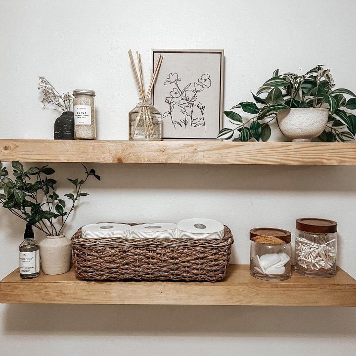
Why Shelf Decor Matters More Than You'd Think
Bathroom shelves don't just hold stuff. They set the tone for the entire room.
Walk into any bathroom and your eye goes straight to the open shelving.
Cluttered shelves feel stressful because they visually shout instead of calmly existing. Think of them as a small stage. Whatever gets placed there becomes part of the room's personality.
Pretty but impractical decor never lasts, either. If a towel can't be grabbed easily, you'll resent the setup within a week.
The best shelf decor always looks intentional, serves a real purpose, and stays easy to maintain. Hit all three and the shelf genuinely works.
One more thing worth knowing: bathrooms stay humid, and some materials just can't handle that. Skip anything that rusts easily, absorbs moisture, or demands constant cleaning.

1. Add Personal Touches That Feel Like You
This is the part that actually makes a shelf feel real instead of staged. Personal items belong here more than anywhere else in the bathroom.
A framed quote, a travel souvenir, a favorite scent. Subtle personal decor does more for a space than another matching jar ever could.
A collection of small, meaningful objects makes it clear this bathroom belongs to someone, not a showroom.
Don't overthink which objects qualify, either. If it makes you smile when you see it, it belongs on the shelf.
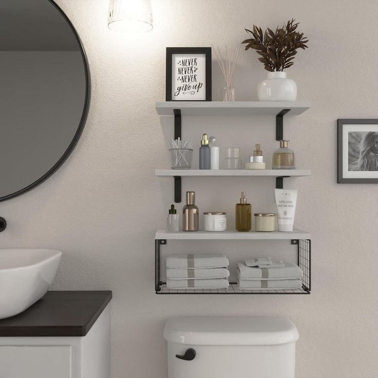
2. Use Matching Containers for Visual Calm
Consistency creates calm, and that's really the whole philosophy behind this one. Aim for visual harmony across every container on the shelf.
Pick one material or one color palette and commit to it. All-white ceramics, all-glass containers, or a neutral mix of textures all work.
A fully coordinated setup, where towels, jars, and accessories all share the same warm tones, reads as intentional rather than randomly assembled.

3. Rotate in Seasonal Accents
Switching your shelf decor with the seasons keeps things feeling fresh without requiring a full makeover every few months.
Small changes work best here. Dried florals in fall, lighter tones in summer, cozy textures in winter. Nothing drastic, just enough to notice.
A seasonal wreath and a pumpkin or two prove that a shelf should genuinely evolve along with the rest of your house.
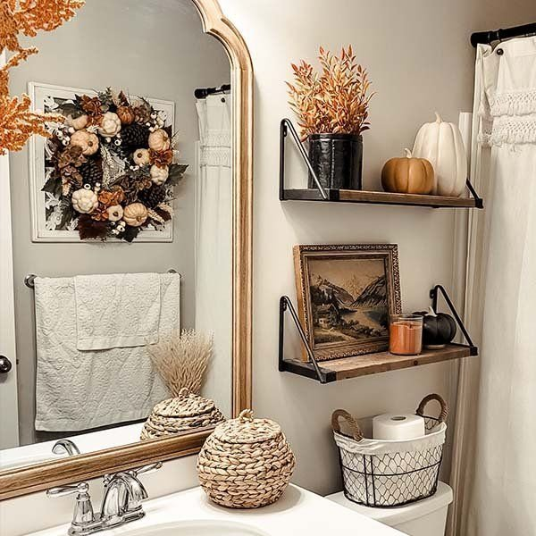
4. Use Trays to Create Order
Trays do real organizational work by grouping loose items into a single visual unit. It's a small trick that reads as genuine design intention.
Perfume bottles, skincare products, and candles all benefit from being corralled onto one tray rather than scattered across the shelf.
The payoff is instant structure for almost no effort. One of the lowest-cost, highest-impact moves on this whole list.
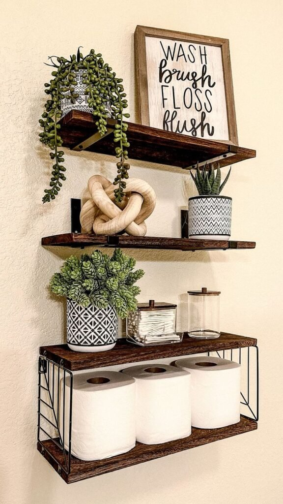
5. Add a Sculptural Focal Point
Every shelf benefits from a genuine focal point, and sculptural objects do that job better than almost anything else here.
Organic shapes and matte finishes work best. Think stone objects, ceramic forms, and abstract shapes that catch the eye without shouting for attention.
A single sculptural piece, anchoring a row of jars, adds real interest without adding clutter.
Resist the urge to buy a matching pair, either. One confident object does more work than two smaller ones splitting the attention.
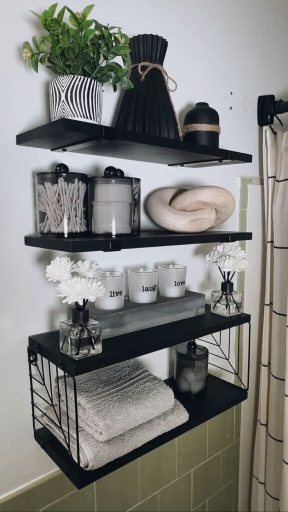
6. Bring in Apothecary Bottles for Vintage Charm
Mixing a modern bathroom with a few vintage details is an easy way to add character, and apothecary-style bottles nail that look better than almost anything else.
Keep them empty or fill them with bath salts. Either way, they photograph well and read as considered rather than cluttered.
The trick is restraint. Group them in threes, pair them with more modern pieces, and use them sparingly. Too many and the shelf starts to feel like a museum display instead of a bathroom.
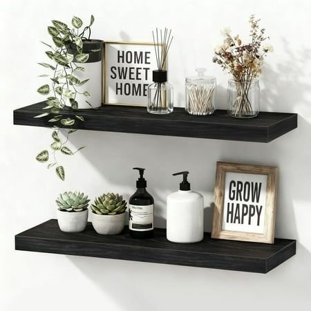
7. Stack a Few Books for Character
Books in a bathroom sound unusual until you actually try it. Then it just works.
Stick to visually pleasing covers rather than whatever's closest on the shelf. Design books, photography collections, and small hardcovers all read well here.
The goal isn't a reading list. It's texture and height. Stacked horizontally next to a few other collected objects, a short pile of books adds genuine personality to a shelf that would otherwise be all bottles and jars.
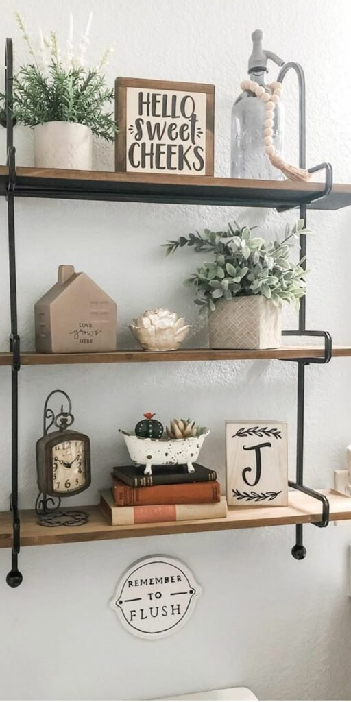
8. Add Natural Wood Accents
Wood adds genuine warmth to bathrooms that can otherwise feel sterile and overly hard-surfaced. A few small wooden elements go a long way.
Not every wood survives bathroom humidity, so choose carefully. Teak trays, bamboo accessories, and sealed wooden boxes all hold up reliably over time.
A rustic wood shelf setup, with its warm tone and simple styling, shows exactly how far natural materials can carry a bathroom without ever overpowering it.

9. Swap to Minimalist Soap and Lotion Bottles
Plastic bottles with loud branding quietly ruin an otherwise nice shelf every time. Swapping them out is one of the simplest upgrades available.
Uniform bottles calm the eye. Mismatched labels do the opposite. Glass dispensers, neutral labels, and refillable designs are the standard worth aiming for.
A row of matching amber glass pumps makes a shelf look considerably more high-end for very little actual cost.
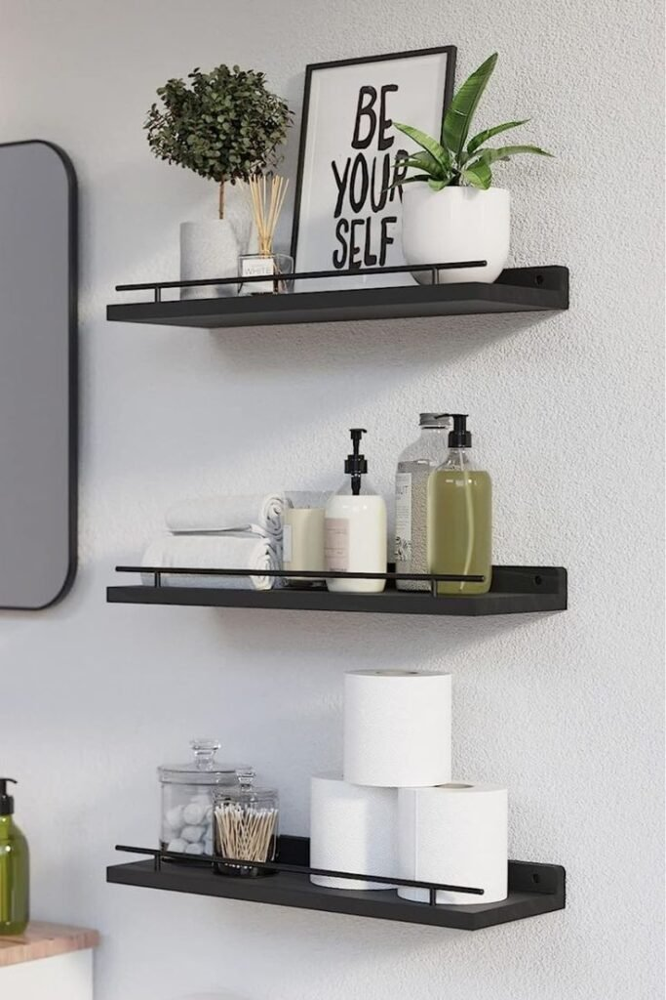
10. Add Woven Baskets for Texture
Bathrooms need softness somewhere, and woven baskets bring real warmth while hiding clutter like absolute pros.
Lower shelves are the natural home for baskets. They balance the heavier visual weight and keep the eye grounded.
Use them for extra toilet paper, cleaning supplies, or hair tools. They look intentional even while quietly hiding actual chaos.
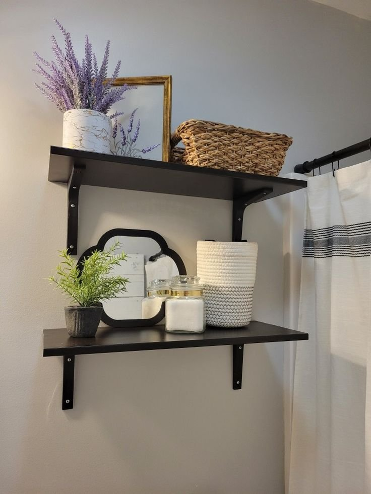
11. Lean Artwork Against the Wall
This one surprises people every time, but leaning framed art against the wall on an open shelf genuinely works, and it works beautifully.
Moisture-resistant frames matter here more than almost anywhere else in the house. Trust that one the hard way if you need to.
Black-and-white prints, botanical sketches, and minimal line art all add personality without committing to a single wall hole.
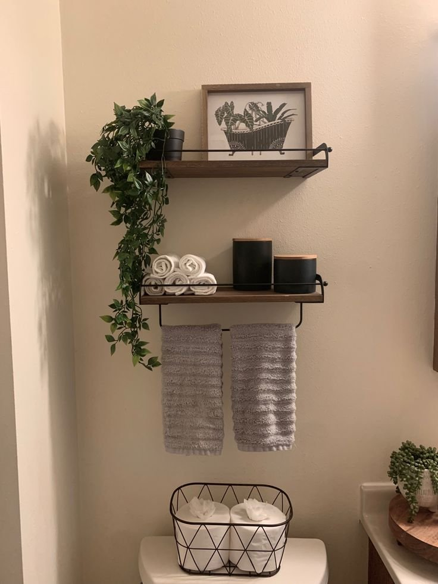
12. Light a Few Candles for Instant Spa Vibes
Nothing transforms a bathroom shelf faster than candles, and that holds true even for the ones that never actually get lit.
Group candles in varying heights for instant depth. Stick to one scent family, avoid anything overpowering, and keep the containers simple.
A tiered tray with pillar candles and a few natural touches should feel calming, rather than like a perfume store exploded across the shelf.
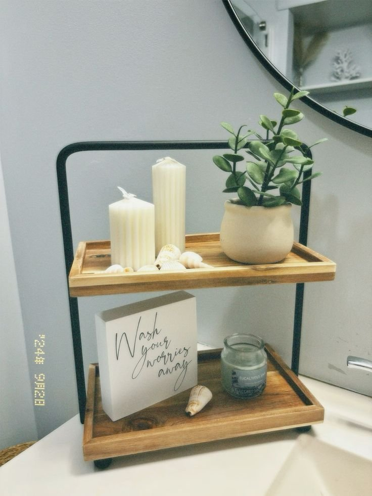
13. Decant Into Storage Jars
Cotton balls and Q-tips were never going to look good on their own, and decorative jars fix that problem instantly.
Matching containers create visual harmony. Random mismatched ones create visual noise. Glass jars read clean, ceramic containers add warmth, and wooden lids bring in texture.
A fully coordinated set proves that style and organization aren't actually in conflict. They just need to match.
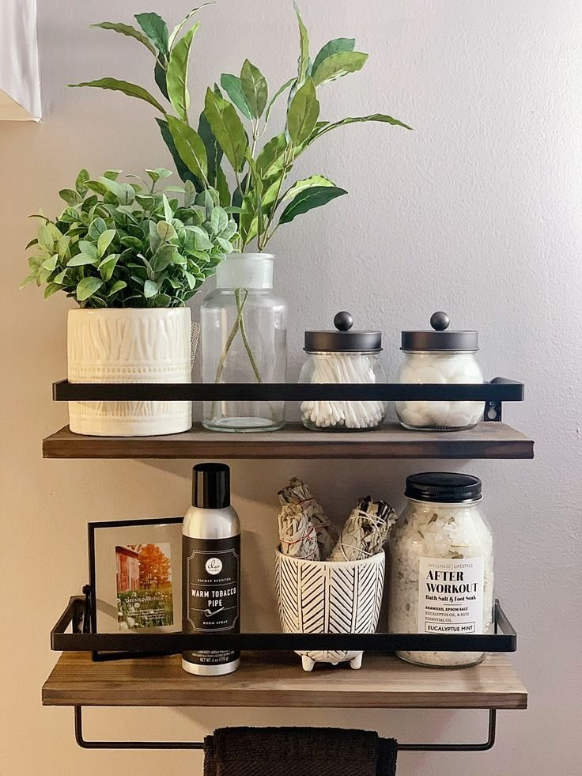
14. Add Small Plants for a Fresh Feel
Plants bring a bathroom shelf to life, literally and visually. Low-maintenance greenery that won't judge you for forgetting to water it is the move.
Humidity-loving plants genuinely thrive in a bathroom environment. Pothos, snake plants, and ferns are all solid picks, and a quality faux plant works too if real ones feel like one more thing to manage.
A mix of trailing and potted greenery softens hard surfaces and instantly elevates whatever else is sharing the shelf.
Even one small pot makes a noticeable difference, so there's no need to turn the whole shelf into a greenhouse to see the benefit.
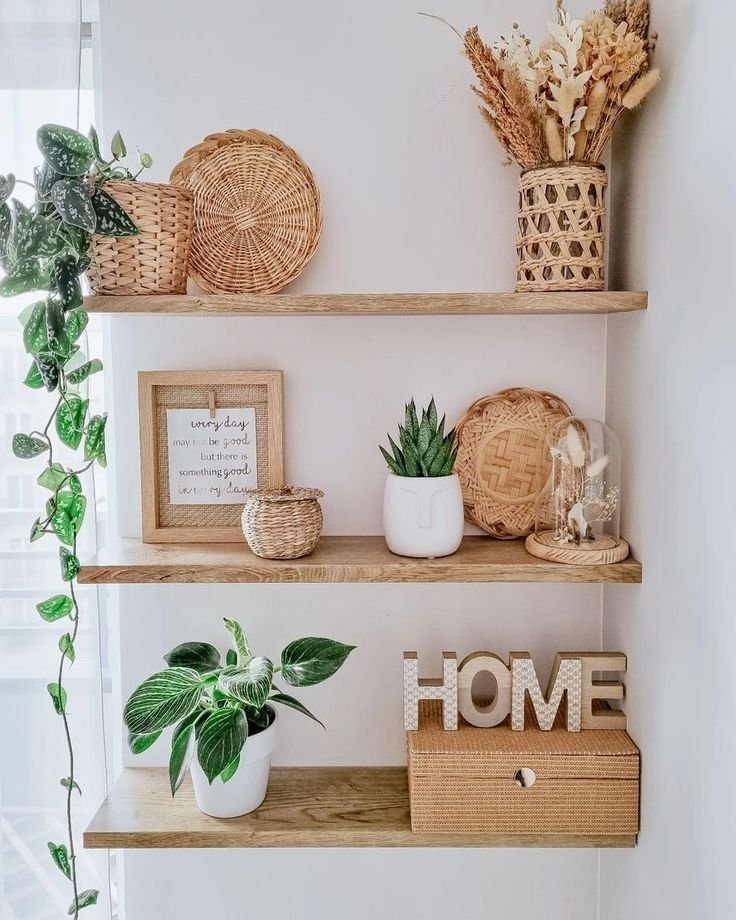
15. Finish With Layered Towels
Neatly folded towels look genuinely good and solve a real storage problem at the same time, which makes this one of the easiest wins on this entire list.
Neutral towels with a little texture work best. Whites, beiges, and soft grays almost never miss. Roll or fold them tightly, stack in odd numbers, and keep the larger towels on the lower shelves.
The effect reads as functional and beautiful at the same time. That combination is rarer than it should be.
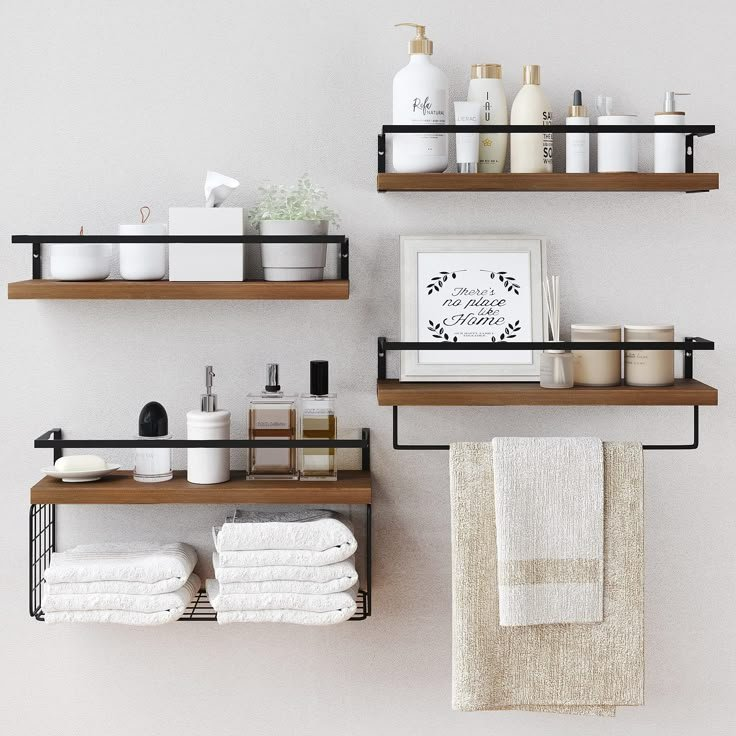
It Was Never About Perfect Symmetry
Bathroom shelves carry real design potential.
The best bathroom shelf decor balances beauty, function, and personality. It never required expensive items or perfect symmetry. It required intention.
A rule of three keeps groupings balanced. Mixing heights and textures keeps things from feeling flat. Stepping back to remove one item almost always improves the result.
Start small. Edit what's already there. Add only the pieces that actually get used.
If the shelves make someone smile walking past, that's the whole assignment done right.
Give it a season, live with it, and swap out whatever stopped earning its spot. The shelf will keep getting better the longer you pay attention to it.